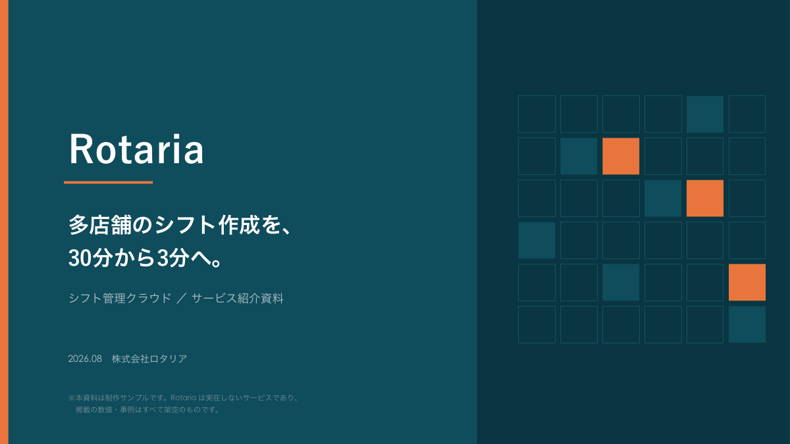
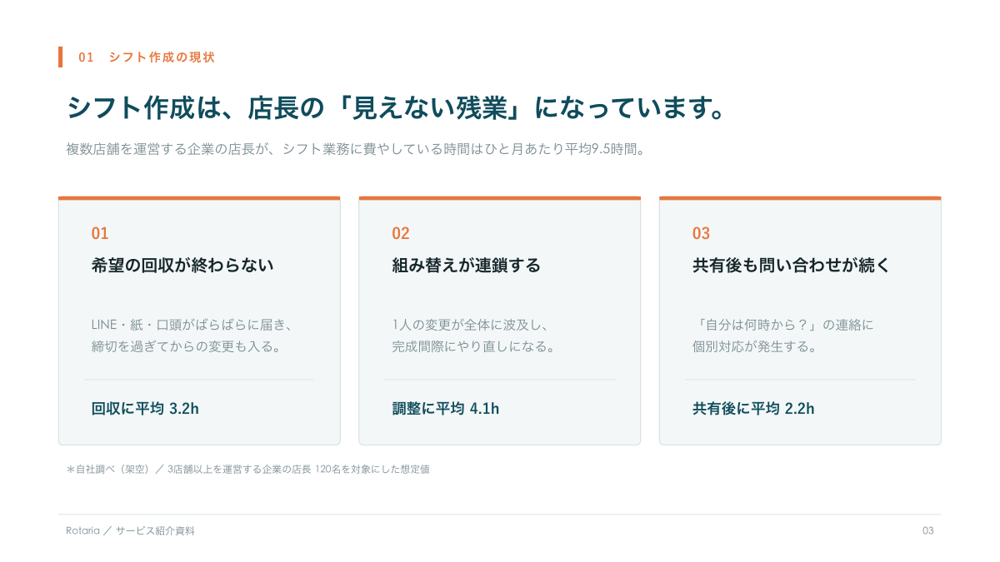
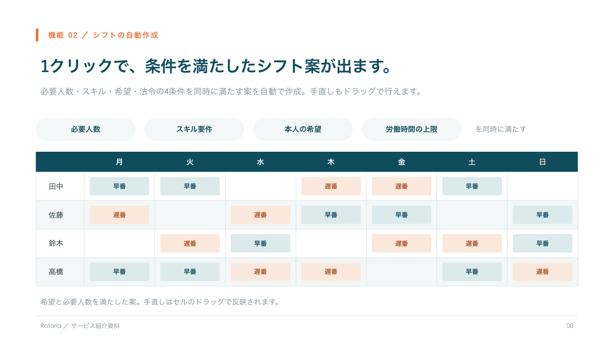
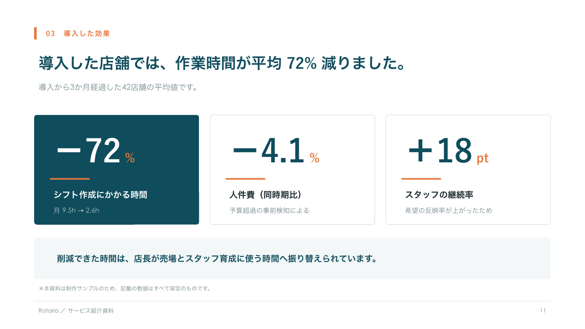
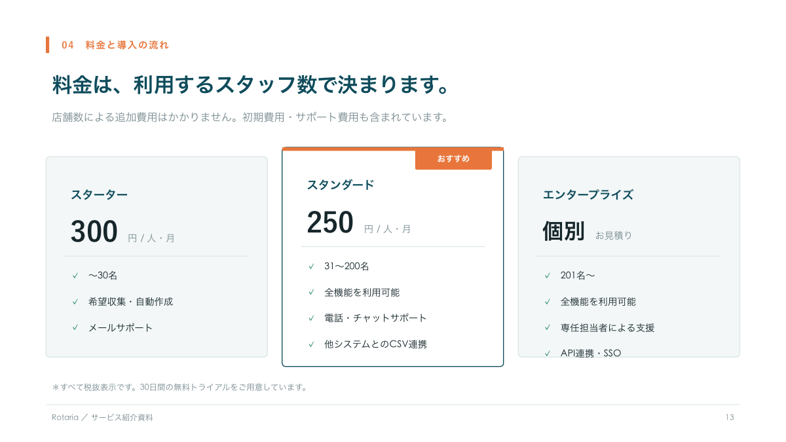
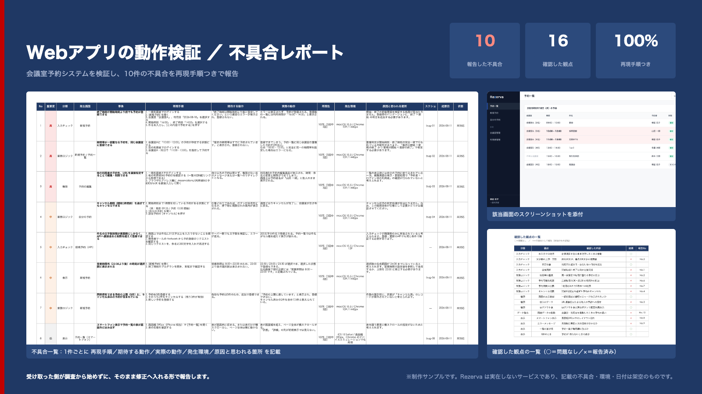
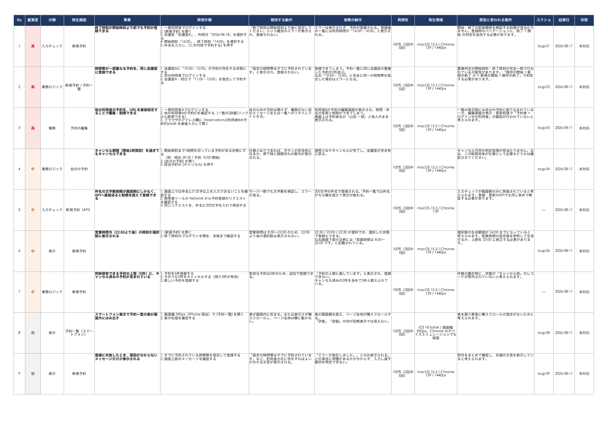
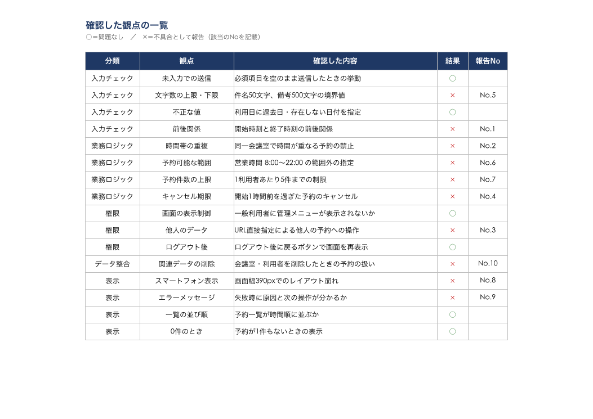
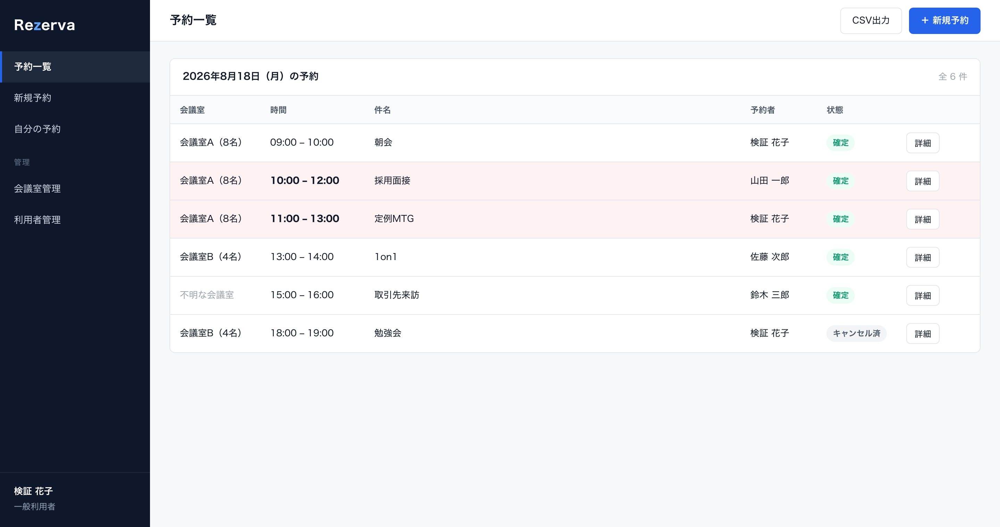

動作検証・不具合レポート
リリース前の第三者チェックを代行します。開発担当がそのまま修正に着手できる粒度で報告します。
- 再現手順・期待値・実際の挙動・環境をセットで記載
- ロール（権限）別の表示・操作制御の検証
- ソース共有時は原因箇所をファイル・関数名まで特定
- GitHub Issue での起票にも対応
テスト・資料・Web・自動化を横断して受けられるため、「検証して、そのまま手順書に落とす」「資料用のスクリーンショットを自動で撮る」といった、 職種をまたぐ依頼をまとめてお引き受けできます。
リリース前の第三者チェックを代行します。開発担当がそのまま修正に着手できる粒度で報告します。
担当者が変わっても同じ手順で実施できる粒度の試験書を作成します。実際に自分で回して初めてわかる曖昧さを避けた書き方で。
実際の管理画面キャプチャつきで、社内配布・顧客提出にそのまま使える資料を作成します。
HTML／CSS でのコーディング。配色設計、スクロール連動アニメーション、図版の作成まで含めて対応します。
繰り返し発生している手作業を、次回からご自身で回せる形にしてお渡しします。
「検証してから手順書にする」「資料用の画面を撮る仕組みごと作る」など、職種をまたぐ依頼こそお任せください。
実際にお出しするレポートの1件分です（内容はサンプル用に作成した架空のものです）。 1件ごとに、再現手順・期待値・実際の挙動・環境・原因箇所を記載するため、受け取った側は調査から始めずに修正へ入れます。
src/server/members/invite.ts の sendInvite() が、既存レコードの有無を判定せず
upsert() に role: 'viewer' を毎回渡しているため。既存ユーザーの場合は role をペイロードから除外する必要があります。
orgs/invite.ts）にもあり、そちらでも同様の事象を確認しました。あわせてご確認ください。※ 現職での成果物は守秘義務の対象となるため掲載しておりません。本見本は、実際の納品フォーマットに沿って作成した架空の事例です。 ご依頼時は Excel／Google スプレッドシートなど、ご指定の形式で納品します。
現職での成果物は守秘義務の対象となるため掲載しておりません。実際の制作手順と同じ工程で、 架空のサービスを題材に新規制作したサンプルを掲載しています。

多店舗チェーン向けシフト管理サービスという設定で、営業・商談で使う紹介資料を1本通して設計しました。 原稿を並べるのではなく、1ページ＝1メッセージに絞り、伝えたい内容を図解・表・グラフに変換しています。 配色は2色＋グレーに固定し、見出し・余白・罫線の規則を15ページ全体で統一しました。




※ Rotaria は実在しないサービスです。守秘義務のある業務の成果物は掲載できないため、 実際の制作フローと同じ手順で、架空のサービスを題材に新規制作したものです。掲載の数値・事例はすべて架空です。

架空のWebアプリを検証対象として、リリース前の動作チェックを行った想定のレポートです。 不具合10件（高3・中4・低3）を、1件ごとに再現手順・期待する動作・実際の動作・発生環境・原因と思われる箇所まで記載しました。 見つかった不具合だけでなく「何を確認して問題がなかったか」も16観点の一覧にしています。



※ Rezerva は実在しないサービスです。守秘義務のある業務の成果物は掲載できないため、 実際の検証・報告と同じ手順で、架空のシステムを題材に新規制作したものです。記載の不具合・環境・日付はすべて架空です。
規模によって変動するため、あくまで目安です。まずは対象のURLや資料をお見せいただければ、規模を確認して適したプランをご案内します。
リリース前の動作チェックを代行し、再現手順つきのレポートを納品します。
そのまま実施できる粒度の試験書を作成します。実施までのご依頼にも対応します。
実際の画面キャプチャつきで、社内配布・顧客提出にそのまま使える資料を作成します。
※ LP制作・業務自動化については、内容によって幅が大きいため個別にお見積りします。
※ 表示は税込・すべて目安です。継続してご依頼いただく場合は別途ご相談ください。
着手前に成果物の形（枚数・構成・仕様）をすり合わせ、手戻りを防ぎます。判断が必要な場面では、選択肢と推奨案をセットでお出しします。
対象のURL・資料をお見せください。規模と対応可否を確認し、適したプランと納期をご案内します。ご相談だけでも歓迎です。
納品物のフォーマット・粒度・確認範囲を着手前に文章で確定します。ここを固めておくと、完成後の「思っていたものと違う」を防げます。
作業の途中で一度、途中経過をお見せします。方向が違っていた場合はこの時点で修正します。判断が要る箇所は選択肢を添えてご質問します。
納品後の修正はプランに含まれる回数まで対応します。自動化ツールの場合は、次回からご自身で回せるよう手順書を添えてお渡しします。
製造現場の外観検査からキャリアを始め、SaaSの品質保証へ。「規格から外れたものを見つけて止める」という考え方は、そのままソフトウェアテストに通じています。
学習管理システム（LMS）・会計システムの開発・提供。品質保証（テスト設計200〜300ケース規模、ロール別検証、API検証、Issue起票）、 サービス紹介LPの制作、機能説明資料・操作マニュアルの作成、社内業務の自動化を担当。 管理画面のスクリーンショットを自動撮影して資料へ差し込む仕組みを自作し、画面数の多い資料の作成工数を削減しました。
BtoB SaaS・IT分野の記事を執筆（RPAツール、業務効率化ツール、金融サービスなど）。構成案の作成から執筆・修正対応まで担当し、 複数クライアントと並行して取引・納期管理。
SaaSを「専門知識のない読み手に伝わる形で説明する」経験が、現在の機能説明資料・操作マニュアル・LP制作に直結しています。
自動車用バンパーの製造ラインを担当。製品の外観検査、規定に沿った手順での作業品質の維持、部品・製品の運搬と資材管理。
決められた手順を守り、規格から外れた製品を見つけて止める。製造現場での検査の考え方が、現在のソフトウェアテストの基礎になっています。
可能です。画面を触りながら想定される挙動を確認し、判断が必要な箇所はご質問させていただく形で進めます。仕様書やソースコードをご共有いただけると「実装が意図どおりか」まで踏み込めるため、見つかる不具合の数と報告の精度が上がります。
必須ではありません。URLとテスト用アカウントだけでも検証できます。コードをご共有いただける場合は、原因と思われる箇所まで報告に含められる、という違いがあります。秘密保持契約（NDA）の締結にも対応しますので、社内規定に沿ってご判断ください。
対応できます。ステージング環境・検証環境をご指定ください。
まずURLをお見せいただければ、規模を確認して適したプランをご案内します。ご依頼前のご相談も歓迎です。
秘密保持契約（NDA）の締結に対応します。ご共有いただいた資料・アカウントは納品後に削除し、他の目的には一切使用しません。実績としての掲載も、許可をいただいた場合のみ行います。
脆弱性診断・ペネトレーションテスト（セキュリティ専門の診断）、ネイティブアプリ（iOS／Android）の実機検証、ゲームのテストプレイは対象外です。また、不具合の「修正」は承っておらず、検証と報告までを担当します。受けられない量のご依頼は、正直にその旨をお伝えします。
「これは対応できますか？」というご確認だけでも歓迎です。ご要望を伺い、対応可否と進め方をご提案します。